Хакар
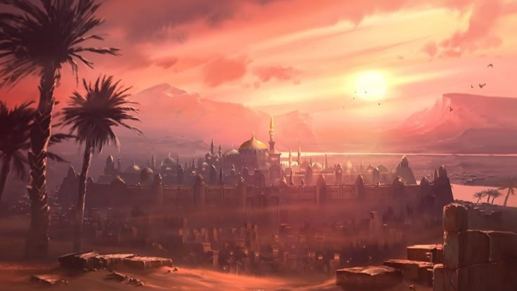
Нижний материк Хакар: является колыбелью древних цивилизаций, именно отсюда начался божий путь. И тут же закончился путь одной древней цивилизации, а пустыня Слез по сей день является смертельно опасным местом, уступающим лишь ледяному краю и пепельным пустошам. На нем находятся две столицы: ключевая, торговая столица полулюдей и святая столица — оплот всех верующих, по слухам богиню Азарис перевезли в великую церковь, посещение которой без разрешения запрещено всем кроме аасимаров.
Регионы
Земли скорпиона
-
 Немые горы
Немые горы
-
 Тюрьма Альтамерия
Тюрьма Альтамерия
-
 Немой остров
Немой остров
-
 Ледяной пролив
Ледяной пролив
- 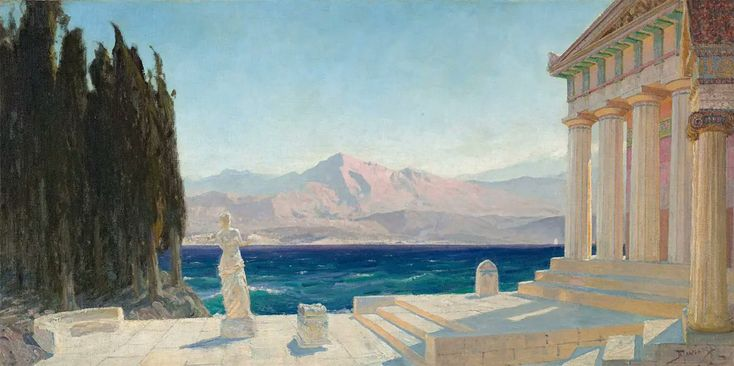 Острова света
- 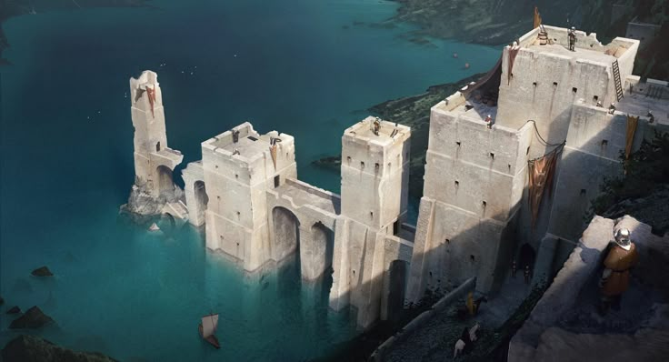 Светлый залив
- 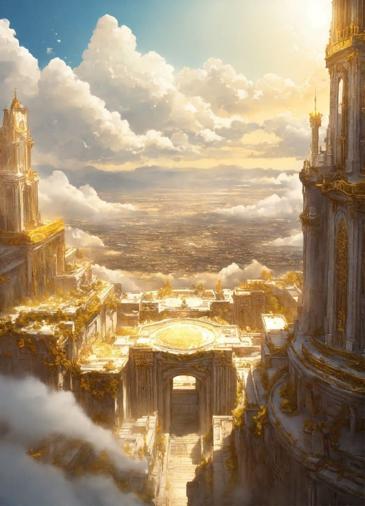 Нижняя Святая стена
- 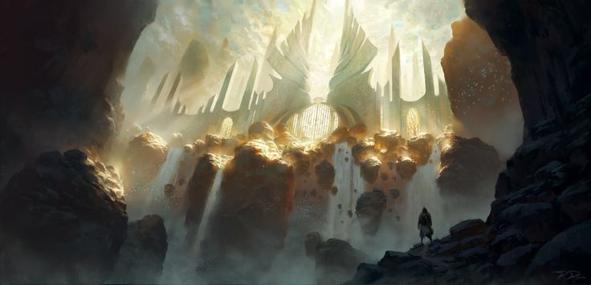 Верхняя Святая стена
- 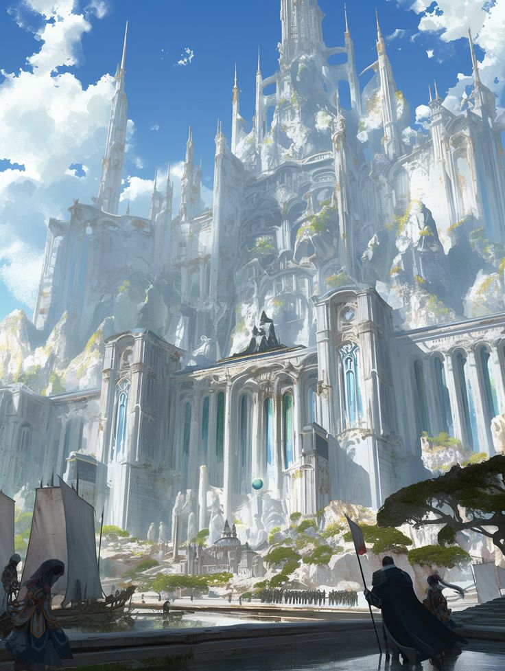 Арафим
- 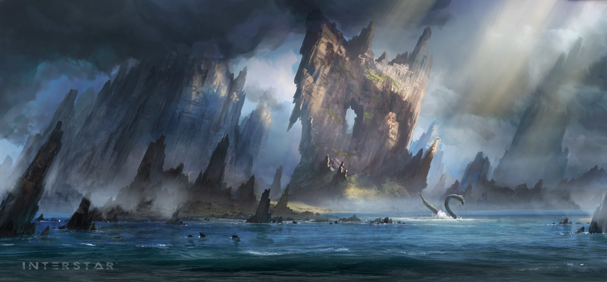 Алмазный пролив
- 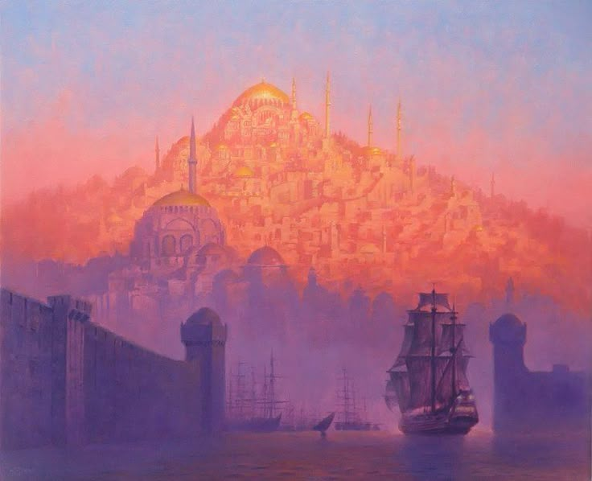 Валарис
- 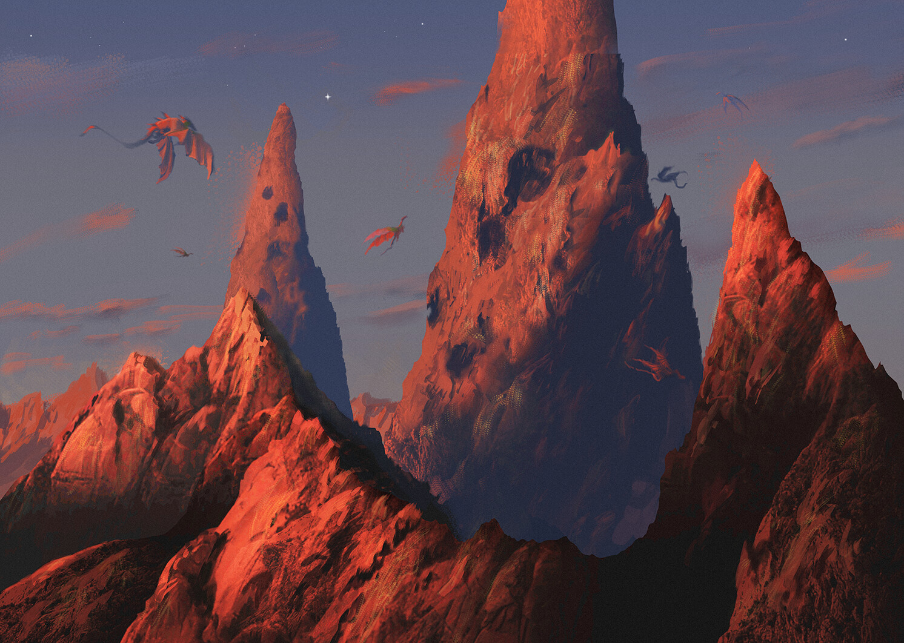 Ветреный пик
- 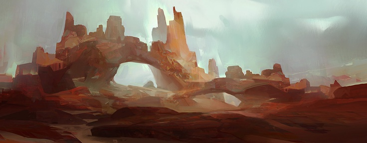 Мосты разбитых желаний
- 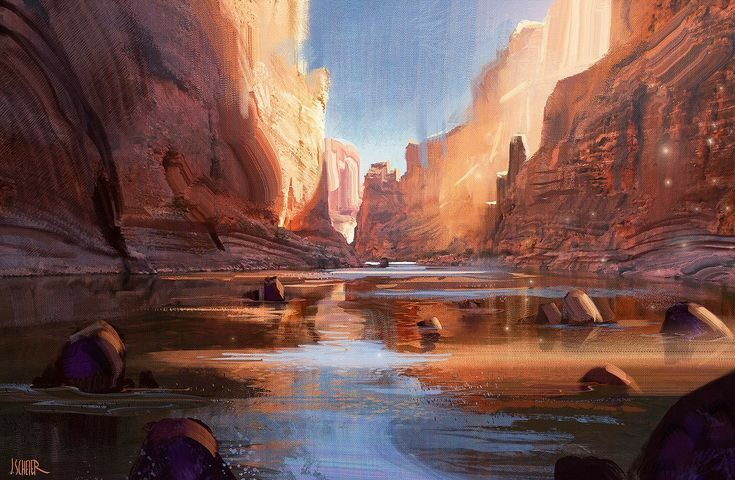 Река Раф
- 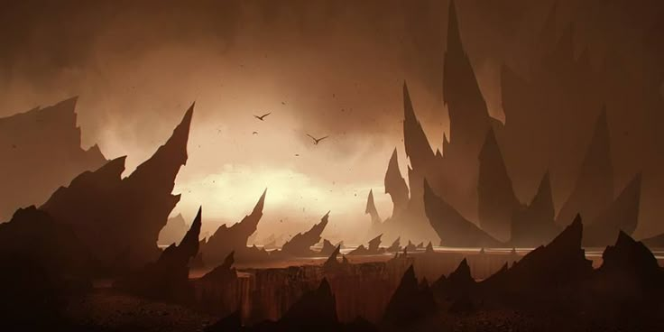 Зубы мертвых
- 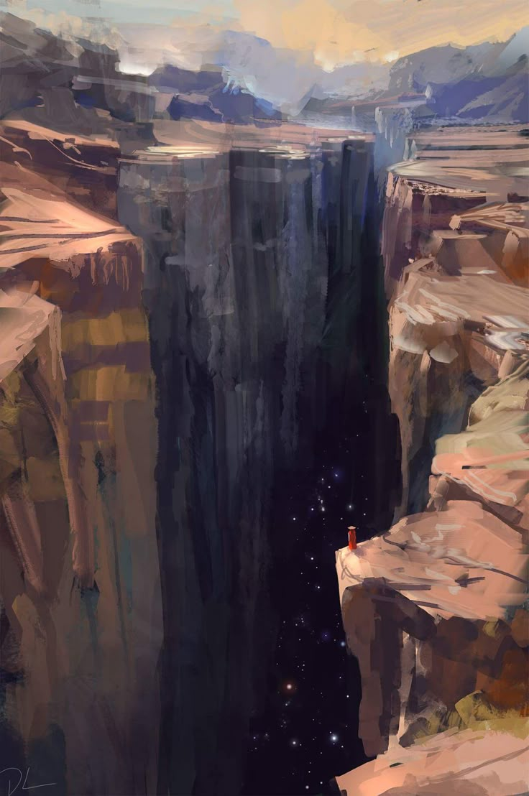 Расщелина Харэс
-
 Мертвые буреломы
Мертвые буреломы
-
 Обрыв бескрылых птиц
Обрыв бескрылых птиц
- 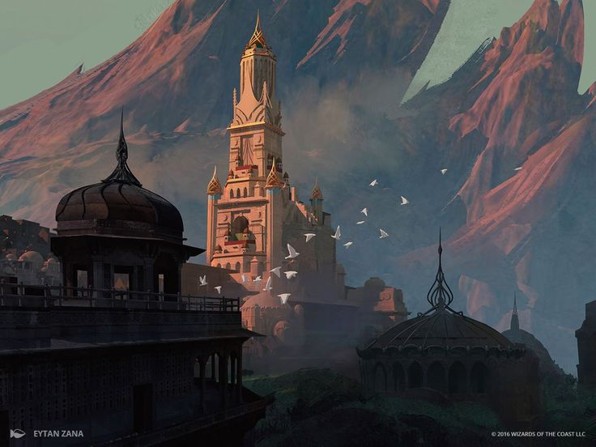 Прифир
-
 Залив ветров
Залив ветров
-
 Острова ветров
Острова ветров
- 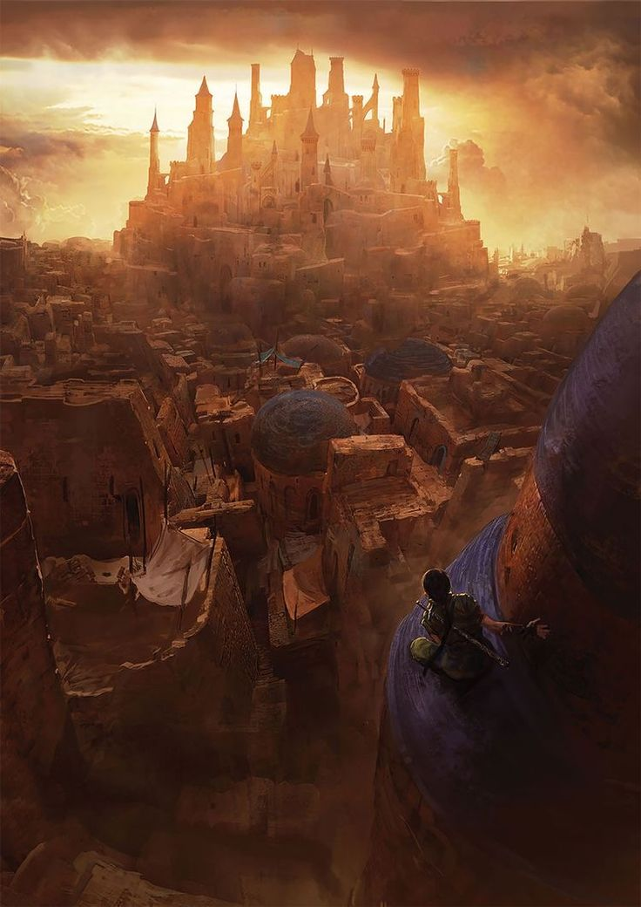 Харафар
-
 Остров Одинокий
Остров Одинокий
- 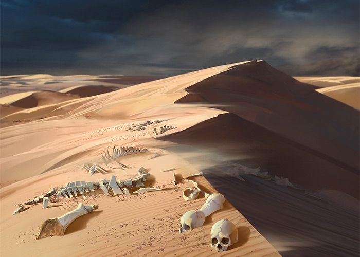 Пустыня Слёз
- 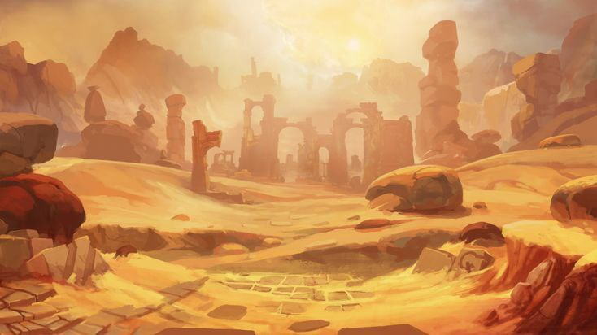 Руины страдающего града
-
 Руины слёз
Руины слёз
-
 Отколотые острова
Отколотые острова
-
 Острова Песков
Острова Песков